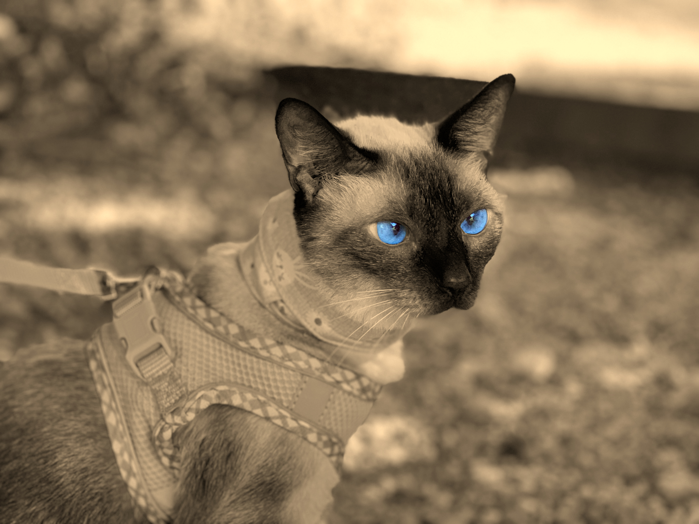

Sobre o projeto
O projeto Plantas & Gatos nasceu de uma vivência intensa, amorosa e transformadora com nossa gata Safira, uma siamesa extremamente inteligente que conquistou até quem dizia não gostar de gatos. Ela se tornou nossa companheira inseparável e gerou esse vínculo inesperado e especial.
Em 2024, Safira começou a apresentar problemas renais e precisou passar por diversos tratamentos, incluindo internações, hidroterapia e alimentação por sonda esofágica, que ela usava com elegância sob uma bandana rosa. Sua rotina exigia atenção constante: alimentações a cada três horas, acompanhamento frequente e, acima de tudo, muito amor. Ela nos acompanhava ao trabalho, em viagens e se tornou parte ativa da nossa rotina.
Apesar de todos os esforços, Safira nos deixou em agosto de 2024, deixando um vazio enorme. Mas seu legado permanece: o carinho, as memórias e a inspiração para criarmos um ambiente seguro para nossos outros gatos — Romilda, Queixada e Feijão (filho da Romilda). Também prestamos homenagem à Mística, irmã da Queixada, que também já se foi.
Foi dessa necessidade prática e emocional — de adaptar nossa casa para plantas que não colocassem nossos gatos em risco — que nasceu este projeto. Plantas & Gatos é um tributo a Safira e a todos os que permanecem conosco. Cada conteúdo, cada imagem, carrega não só informação, mas também respeito, memória e amor.